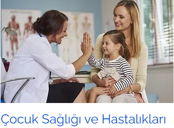
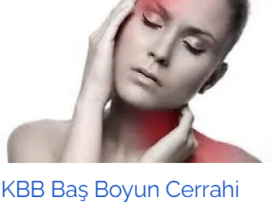
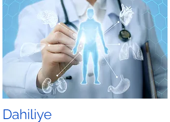
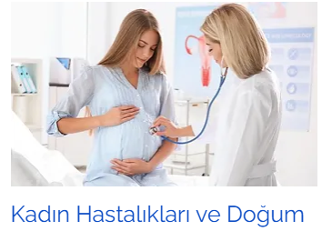
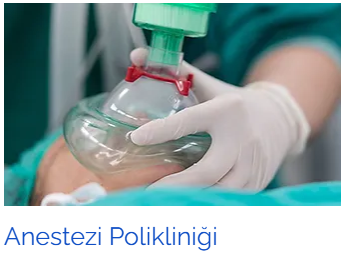
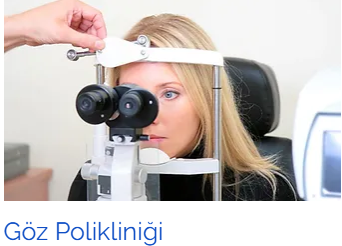

Çocuk sağlığı ve hastalıkları, yeni doğan döneminden 18 yaşına kadar tüm çocukların koruyucu sağlık hizmetler, teşhis ve tedavilerini yapan bilim dalıdır.

Sağlıklı bir yaşam geçirebilmek ve hayat kalitemizin yüksek kalmasını sağlamak için vücutta yer alan organların ve sistemlerin doğru şekilde çalışması çok önemlidir.

Günümüzdeki bilimsel gelişmelerin ışığında ayrıntılı fiziksel muayene, modern tıbbın sağladığı imkanlar ve yeni nesil tetkikler yardımıyla pek çok hastalık en erken evresinde tespit edilerek ilerlemeden tedavi edilebilmektedir.

Kadın Hastalıkları ve Doğum Bölümü, her günü heyecanla yaşanan gebelik sürecinde karşılaşabileceğiniz tüm sorunlara çözüm arayan ve sizi her konuda bilgilendiren sağlık ekibiyle kapsamlı hizmetler vermektedir.

Ağrı insana en çok rahatsızlık veren semptomdur fakat ağrı hastanın katlanmak zorunda olduğu bir kader değil, tedavi edilebilir bir rahatsızlıktır.

Dünyaya açılan kapımız gözlerimizde genetik nedenler, enfeksiyon gibi çevresel etkenler ya da yaşlanmaya bağlı olarak sorunlar oluşabiliyor.